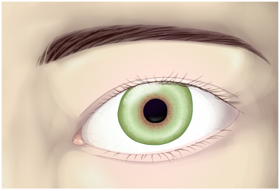
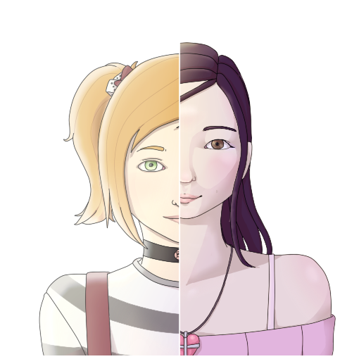
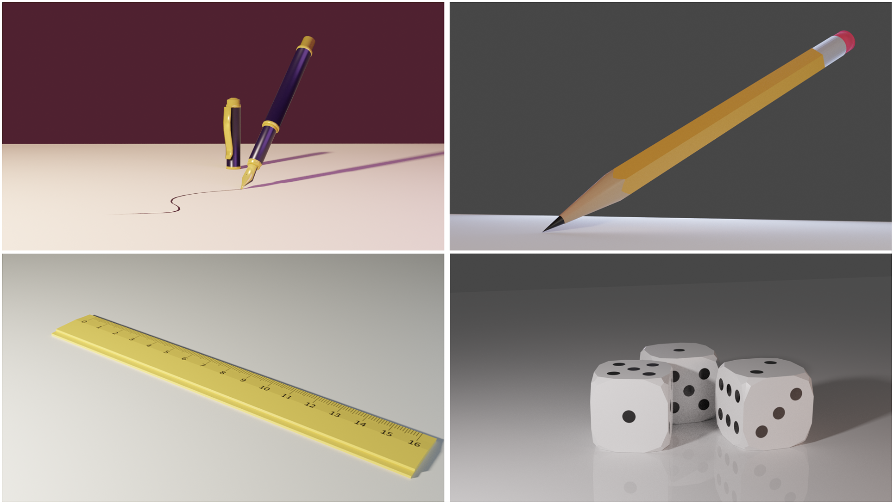

Gliederung:
- Zeichnungen
- 3D Modellierungen
- 3D Animationen
- Musik
- Gedichte
Zeichnungen
 
3D Modellierungen

3D Animationen
Musik
Gedichte
You are not alone
A shadow swept across your peripherals
It's more than just god's good willed miracles
that when living your life in vain,
you haven't already become insane.
As voices whisper in your brain
you jump onto a different train.
But it won't take you where you want
you'll just start from where you've begun.
Don't drown yourself in sorrows though
as you once again swim against the flow.
'Cause when standing there in the tide,
you'll soon feel someone by your side.
Nach oben